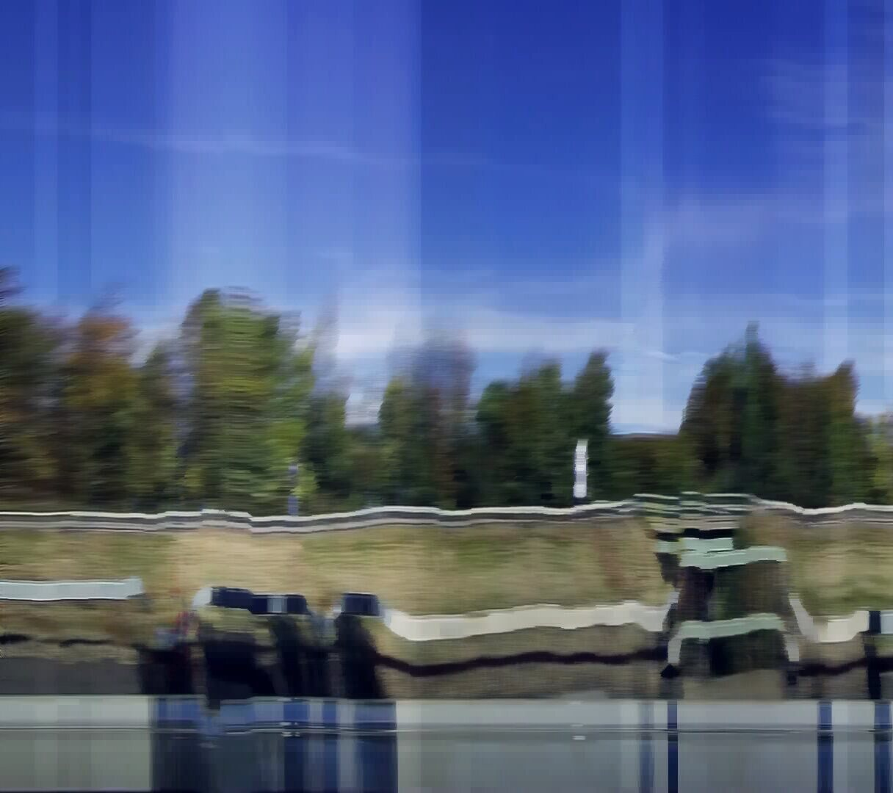
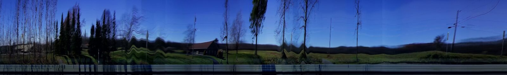
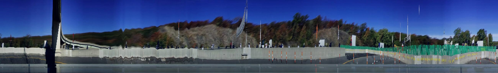
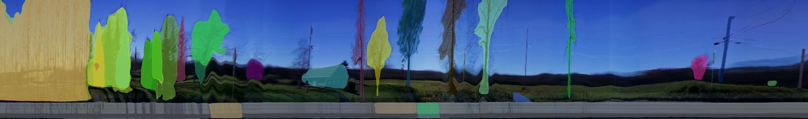
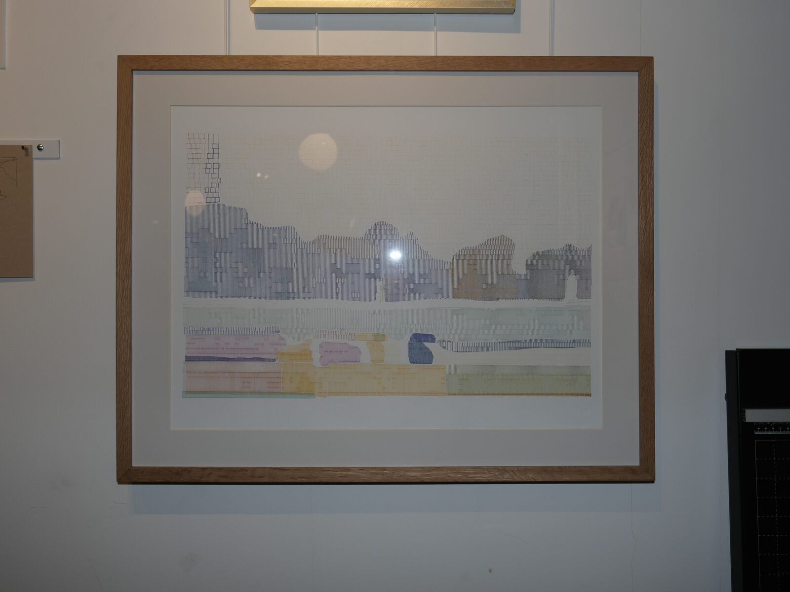
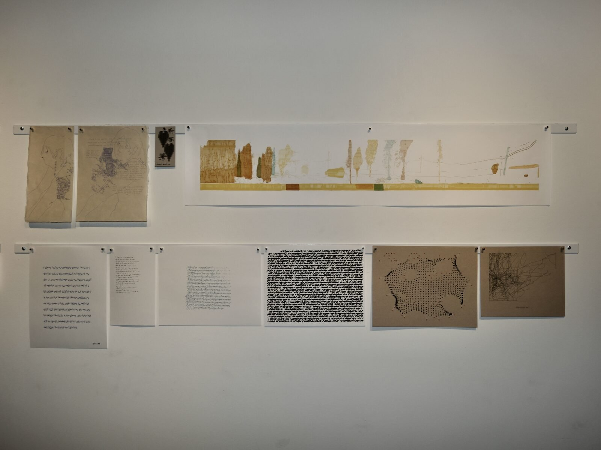
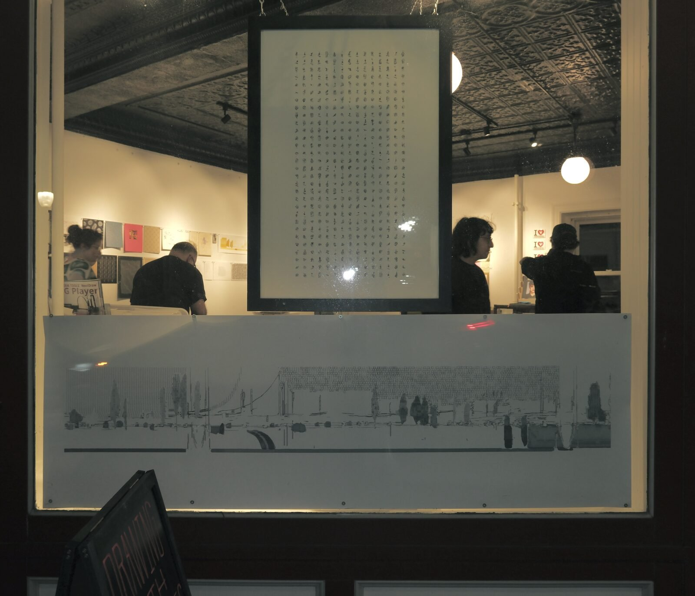

the long way home
Ten road trips of dashcam footage, turned into slit scans and plotter drawings.

This year I made ten 10-hour road trips: Pittsburgh to Michigan, Pittsburgh to New York, and back again. A dashcam ran the whole time. I left it on through a towing incident, two snowstorms and a swerve on I-76, and the footage piled up: hours of highway, weather and road texture. Everything a car processes and nobody watches.
I wanted to make a record of that driving. Not a documentary, and not navigation data, but the physical fact of it.
Time as landscape
A slit scan keeps a single column of pixels from every frame and lays the columns side by side, so time runs left to right across the image. Three hours of interstate become one long band of weather, road surface and motion. Anything the car passed quickly is squeezed thin; anything it sat beside, like a red light or a traffic jam, stretches into long horizontal streaks.
The technique has a long history, from photo-finish cameras at racetracks to the Stargate sequence in 2001: A Space Odyssey. What I liked about it here is that it makes the dashcam’s indifference visible. It records everything at the same rate, whether or not anything is happening.

Ghosts in the snow
After a February storm, I asked a segmentation model (SAM3) to find “snow.” Along with the snow, it outlined something I wasn’t looking for: sneckdowns, the paths that people and cars leave in snow at intersections, which show how people actually move through a street as opposed to how it was designed. Ghosts of human presence, in footage that was never looking for them.


Drawing with machines
For Golan Levin’s Drawing with Machines studio, I turned the scans into drawings. Each became a hatched SVG, made with vsketch and vpype, that an HP Draftmaster and a USCutter MH871 plotted with watercolor pens, Posca markers and Micron pens.

Yupo paper worked best. It’s synthetic, so watercolor sits on top of it instead of soaking in, and the plotter’s even pressure makes a mark I can’t make by hand. The drawings look like damaged signal or compressed memory, which is roughly what they are.
Plotting turns the model’s certainty back into pigment bleed and mechanical error. Those mistakes carry more information than a clean reconstruction would.


Dashcam explorations ↗ · A dash cam is worth 1,000,000 words ↗